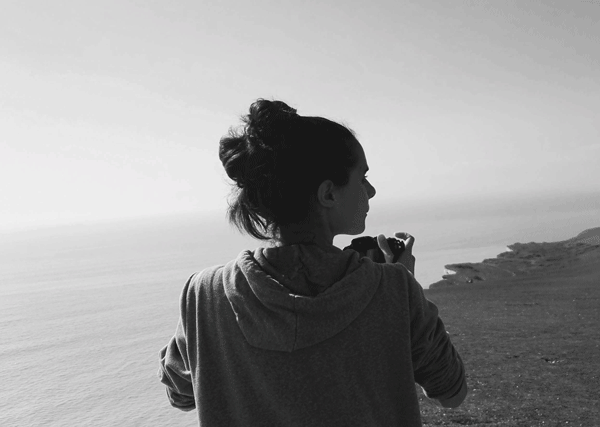
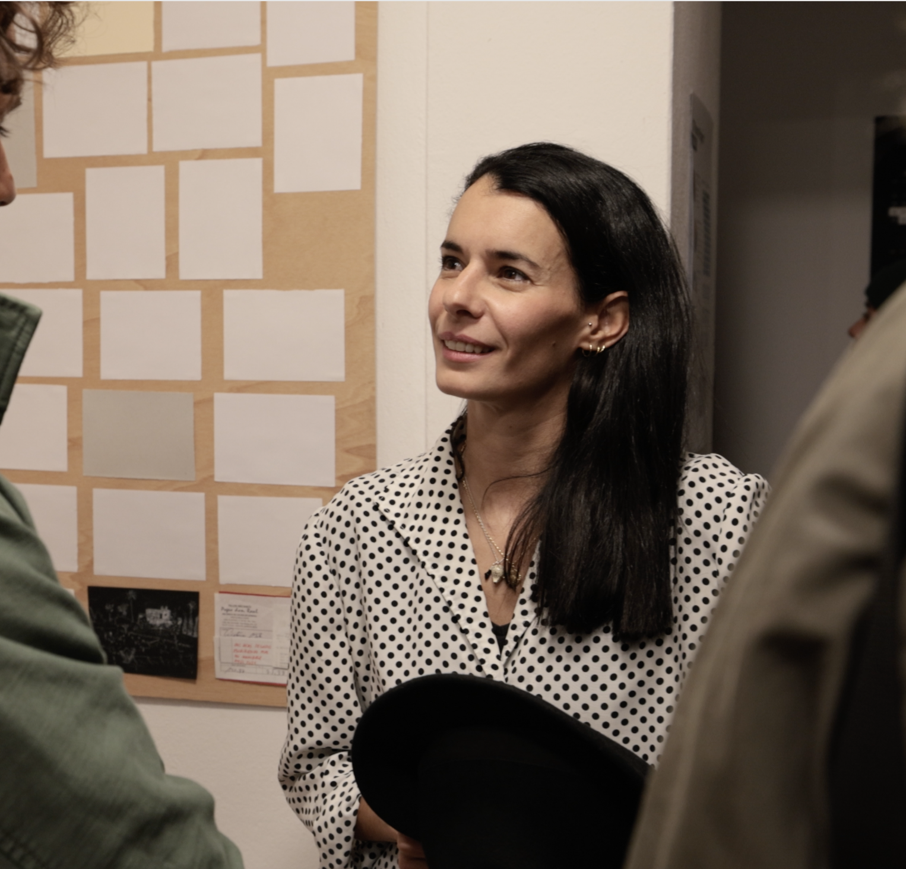

About me
Graphic Designer ///
Illustrator ///
Art Director ///
-


2020-2025 / Palladium Hotel Group (Ibiza)
2018-2019 / Comunica+A (Madrid)
2018 / LOLA MullenLowe (Madrid)
2017-2018 / Ogilvy&Mather (Madrid)
2016-2017 / Freelance
2014-2016 / Graphic Design Degree at Escuela Artediez, Madrid
2012 / Minor course at Faculty of Arts and Social Sciences of Maastricht (Netherlands)
2009-2014 / Fine Arts Degree at the Complutense University of Madrid
My goal is to show how much I enjoy design and creativity, contributing to innovative projects and crafting distinctive corporate identities while continuously learning across creative fields.
2025 / 12 Years Project at La Petite Galerie (Ibiza)
2019 / Mestre&Mate at Sala Siroco (Madrid)
2018 / FAST EXPO at Sala Siroco (Madrid)
2018 / FACE TO FACE Ale Fer colab at Sala Siroco (Madrid)
2018 / COLECTIVA MATE at Fundación Villa de Pedraza (Segovia)
2013 / CROMA at El Patio de Martín de los Heros (Madrid)
2011 / ZOOTROPOS at La Casa del Estudiante UCM (Madrid)
2010 / CVE Aniversario 50 años, exposición antiguos alumnos (Madrid)